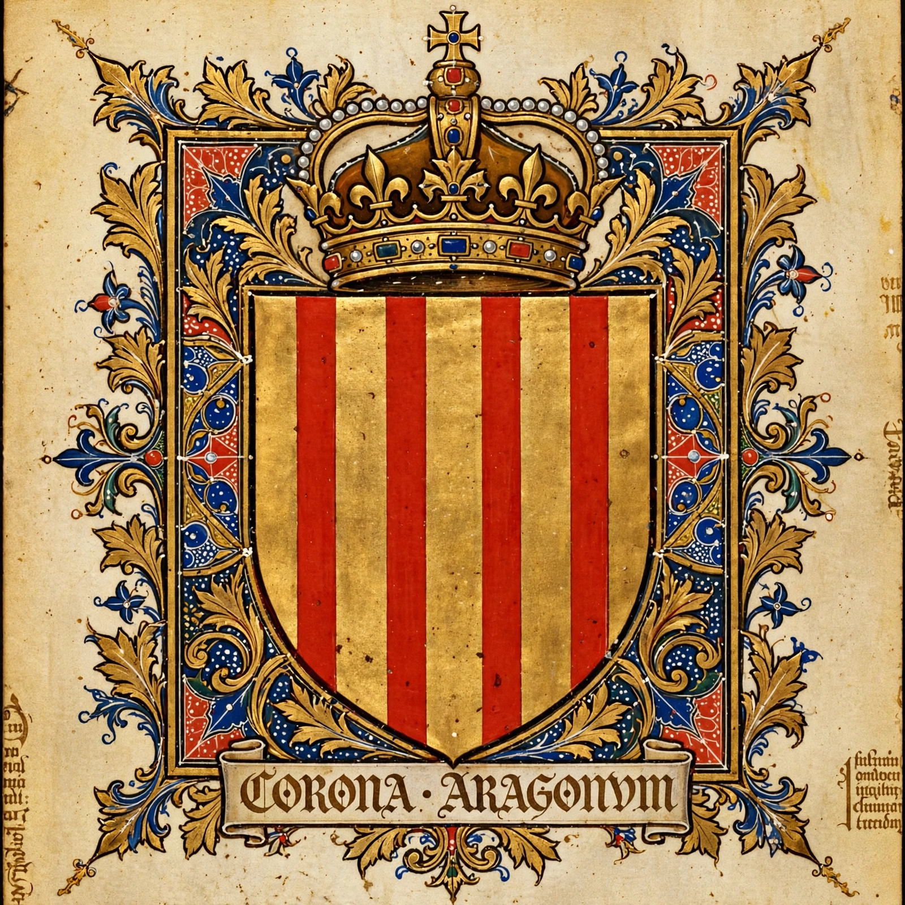

| Crown of Aragon | |
|---|---|
 | |
| Existed | 1162 – 1715 |
| Core territories | Kingdom of Aragon, Principality of Catalonia, Kingdom of Valencia, Kingdom of Majorca |
| Later possessions | Sicily, Sardinia, Naples, Duchy of Athens |
| Capitals | Barcelona, Zaragoza, Valencia, Naples |
| Dissolved | Nueva Planta decrees, 1707–1715 |
The Crown of Aragon (Aragonese: Corona d'Aragón; Catalan: Corona d'Aragó; Spanish: Corona de Aragón) was a composite monarchy — a federation of kingdoms and principalities under one king — that grew from the dynastic union of the Kingdom of Aragon and the County of Barcelona in 1162 into one of the great Mediterranean powers of the later Middle Ages. Its component lands kept their own laws, parliaments (corts) and institutions throughout, a tradition of contractual, pact-based government (pactisme) that long survived in Catalan and Aragonese political culture.
The union originated with the betrothal in 1137 of Petronilla, infant heiress of Aragon, to Count Ramon Berenguer IV of Barcelona; their son Alfonso II inherited both realms in 1162. Under James I the Conqueror (r. 1213–1276) the Crown conquered Majorca (1229) and Valencia (1238) from the Muslims. Peter III seized Sicily after the Sicilian Vespers of 1282, defying the Papacy and France; his descendants added Sardinia (1324) and, under Alfonso V the Magnanimous, the Kingdom of Naples (1442). Catalan companies and consulates, the Consolat de Mar maritime law code, and chart-makers of Majorca — producers of the Catalan Atlas and the portolan charts — made the Crown a thalassocracy of trade as much as of war.
The marriage of Ferdinand II of Aragon to Isabella I of Castile (1469) created the dynastic union from which modern Spain emerged, but the Crown of Aragon remained a legally separate entity with its own institutions for more than two centuries. Its privileges were finally abolished by Philip V's Nueva Planta decrees (1707–1715) after the Crown's lands backed the Habsburg claimant in the War of the Spanish Succession. The red-and-yellow Senyera bars, the heraldic emblem of the Crown, survive today in the flags of Catalonia, Aragon, Valencia and the Balearic Islands.
See also: Portolan chart · Catalan Atlas · James I of Aragon